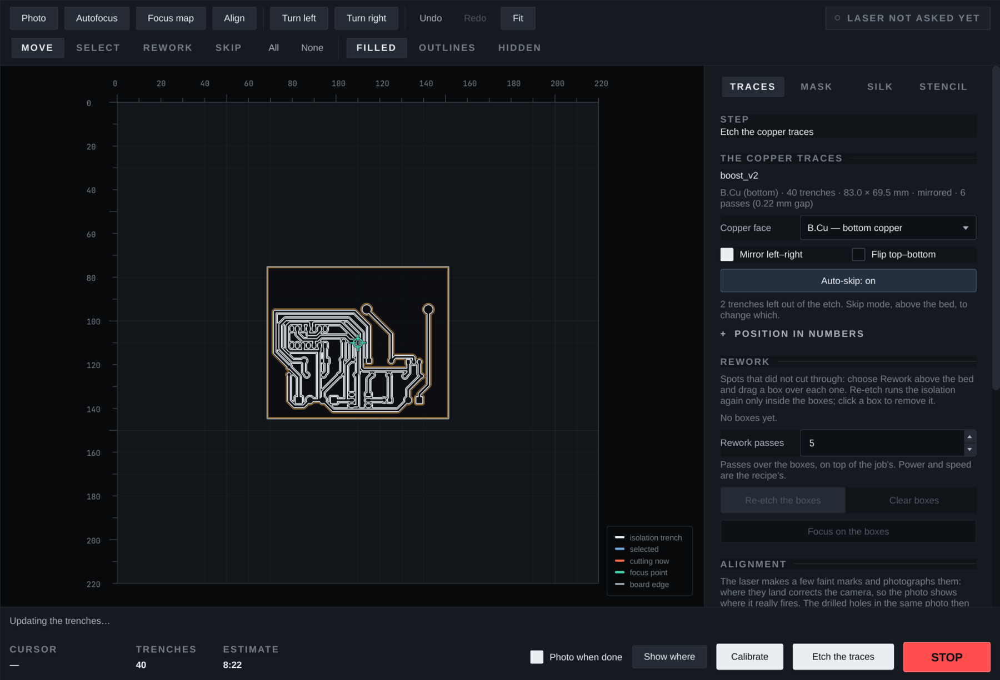
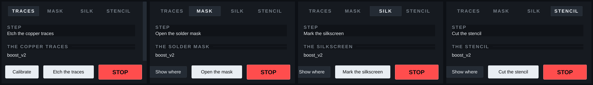
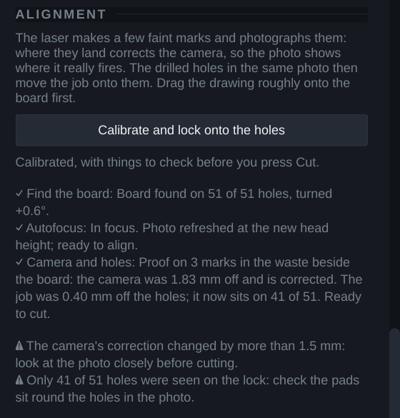
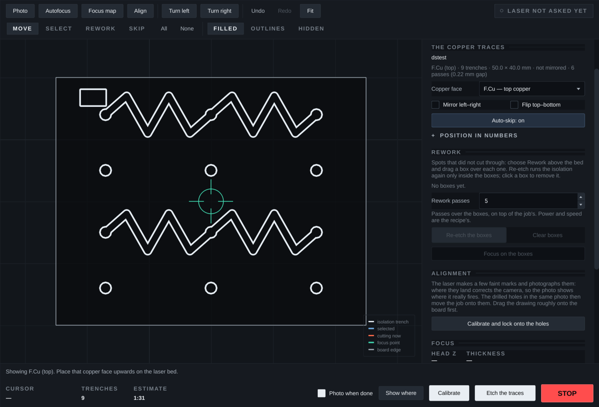
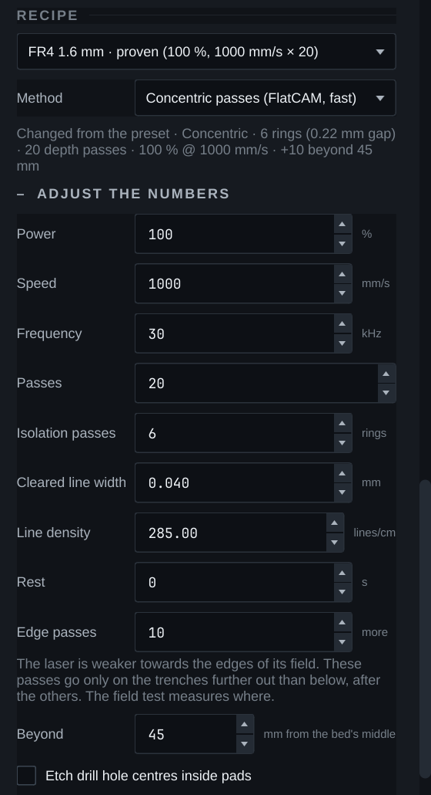

The laser page
SRM-CAM drives the xTool F1 Ultra fiber laser itself, over USB: no xTool Creative Space, no files to carry. The laser is a page of the main window. Click any LASER row on the rail (Etch the traces, Solder mask, Silkscreen, Paste stencil), or Laser at the top (Ctrl+2; Ctrl+1 goes back to the mill).
This page follows a laser board in the order you meet it at the laser: the sheet on the bed, Calibrate, the report, Etch the traces, a look, and re-etching spots. The rest (focus, the recipe, placing by hand) is below, for when you need it. The whole route, mill included, is on Make a board.

1 2 3 4 5 6 7 8 9 10 11 12 13 14- Photo · Autofocus · Focus map · Align, then Turn left · Turn right · Undo · Redo · Fit
- What a click on the bed does: Move, Select, Rework, Skip; All and None for the selection
- How the drawing looks over the photo: Filled, Outlines, Hidden (H)
- The link to the laser: Laser not asked yet, then Laser connected
- The 220 mm bed, with a 10 mm grid and the board's isolation trenches
- The focus cross (teal-green): where Autofocus measures
- The job: Traces · Mask · Silk · Stencil
- Copper face: B.Cu — bottom copper or F.Cu — top copper
- Auto-skip: on: leaves out trenches that isolate nothing
- Cursor, the number of trenches, and Estimate (it becomes Left while the laser runs)
- Photo when done and Show where
- Calibrate: finds the board and lines the job up. Traces only
- Etch the traces: fires the job
- STOP. Esc stops the laser too, from any page
Keep the lid closed while it runs, and the fumes vented outdoors. STOP on the bottom bar always works, and Esc stops the laser from any page of SRM-CAM. Etching copper, mask and steel makes fumes: never run it with the lid open or the fan off.
Connecting
- USB from the F1 Ultra into the PC that runs SRM-CAM. It shows up as a network adapter, with the laser at 201.234.3.1. No driver and no xTool Creative Space are needed.
- The chip at the top right says Laser not asked yet until the page first talks to the laser. After the first photo it says Laser connected.
- No answer? The page says No answer from the laser at 201.234.3.1 (…). Is it switched on and plugged into this PC by USB? and the chip turns red: Laser: no answer. Check the cable and that the laser has finished starting.
The four jobs
The tabs at the top of the right panel switch the job. A rail row opens its own job, and the tabs follow the rail.

| Job | Rail row | What the laser does | Run button | Lines up by | More |
|---|---|---|---|---|---|
| Traces | Etch the traces | Clears rings round every net on the copper face | Etch the traces | Calibrate: the drilled holes | Below |
| Mask | Solder mask | Ablates cured ink off the pads (B.Mask or F.Mask) | Open the mask | Calibrate: the drilled holes, then five test pads | Solder mask |
| Silk | Silkscreen | Marks F.Silkscreen, on the top face's mask ink or the laminate | Mark the silkscreen | Autofocus, Align: the drilled holes | Silkscreen |
| Stencil | Paste stencil | Cuts paste holes in 0.1 mm steel foil | Cut the stencil | Align: the holes it cut | Paste stencil |
Switching the job keeps where the job sits on the bed and the camera's correction. It does not line the new job up: run Align for each new job. For the silkscreen the sheet is turned over, so the old place is wrong anyway.
Where on the bed
Lay the whole sheet on the bed, copper face up, the same way up as it came off the mill. Three things matter:
- Square to the bedLine the sheet's edges up with the bed's edges. Calibrate finds the board in any quarter turn, but only within about 4° of square.
- The board near the middleThe laser is weaker towards the edge of its field. The proven recipe gives the trenches more than 45 mm from the bed's middle 10 extra passes, and beyond about 57 mm the field test cleared nothing at all.
- FlatIf the sheet rocks, tape its corners down in the waste, clear of the board.
Calibrate
On the Traces job, press Calibrate on the bottom bar. One press does the whole set-up, each step as if you pressed it yourself:
- Find the boardA photo of the whole bed. The board's drilled holes are looked for everywhere on it, in all four quarter turns, and the job jumps onto them.
- AutofocusAt the focus cross: the job's middle, moved to a spot kept 1.5 mm clear of holes and off the cut-out. It may sit in the waste beside the board.
- Camera and holesThree small marks are fired in the waste beside the board, and photographed. Where they really landed corrects the camera. The drilled holes in the same photo then lock the job exactly onto the board.
- The reportEach step with its numbers, under Alignment, and a verdict.
Why the board stays in its sheet. The camera marks need copper to land on that is not the board. In its sheet, they go in the waste: 1.5 mm squares, 3 to 4.5 mm outside the board's outline, next to three drilled holes far apart. Before firing, Calibrate checks in the photo that there is sheet under every mark. If there is not (the board was broken out, or the sheet ends too close), it marks the board's own isolation instead, round three holes: copper the etch removes anyway. That works, but the marks are on the board. So leave the board on its tabs, with waste on every side: how much sheet round the board.
- Calibrate never etches. Etch the traces is still yours to press.
- It does not measure a focus map. You do not need one on a flat sheet: the field test cleared just as well 0.3 mm above or below focus. Pressing Calibrate also forgets any focus map you made before. For a bowed sheet, see Focus.
- Look at the photo before you etch. The board should shine like copper, and the drawing sit on the pads. Pale laminate in the photo means the sheet is upside down: turn it over and press Calibrate again. A board with a symmetric hole pattern can be "found" upside down.
- A board with no holes: drag the drawing onto the copper in the photo and press Calibrate. It focuses and corrects the camera, and leaves the job where you put it: No drilled holes, so the job stays where it is: check it on the photo, then etch.
The report


The report reads the verdict first, then one line per step (✓ done, ✗ stopped there), then any warnings (⚠). Where it says "press Cut", the button is Etch the traces.
| The report says | What to do | |
|---|---|---|
| Ready | Ready to cut: look at the photo, then press Cut. | Look at the photo: copper shining, pads round the holes. Then Etch the traces. |
| Check | Calibrated, with things to check before you press Cut. | Read the warnings under it, below. |
| Check | ⚠ The camera's correction changed by more than 1.5 mm: look at the photo closely before cutting. | Zoom in on the photo. Show where traces the outline in blue on the board. If it sits right, etch; if not, Calibrate again. |
| Check | ⚠ Only a of b holes were seen on the lock: check the pads sit round the holes in the photo. | Fewer than 90 % of the holes. Brush the swarf out of the holes, or check the pads sit round them in the photo. |
| Stopped | Stopped at Find the board. Nothing was cut. Fix what it says, then press Calibrate again. | The step's own line says why. See Troubleshooting: Calibrate. |
| Stopped | Stopped before the end. Nothing was cut. | It ended before its last step without saying why. Press Calibrate again. |
The report is also written to laser.log (Files & reference): send it along with any question.
Etching the traces
Press Etch the traces. With nothing selected, it etches the whole job.
- Pass k of N. The proven recipe makes 20 passes over every trench. With trenches more than 45 mm from the bed's middle, N counts their 10 extra passes too (Where on the bed).
- Cutting now. The trench being cut is drawn orange-red on the bed.
- STOP stops it at once; so does Esc, from any page.
- When it is done, with Photo when done ticked, a new photo of the bed replaces the old one, and the page says Done at Z …: 40 trenches, 20 passes. Switch to Outlines to check them on the photo; select any that need more and run those again.
- The rail row is ticked only after a whole run. A run of selected trenches, or a re-etch, does not tick it.
- Auto-skip: on (the default) leaves out trenches that isolate nothing: round the board's edge, round a mounting hole in a pour. Pads, vias, thermal reliefs and other nets always keep theirs. The panel says how many it left out.
- Skip mode: click a trench, or drag a box, to leave it out; click again to put it back. A skipped trench joins the copper on its two sides, so only leave out what isolates nothing.
- Select mode: click trenches or drag a box, and the run does only those (Etch 3 selected). None goes back to the whole job.
Look, then re-etch spots
Etched copper turns dark. A trench that still shines is not through. Switch the drawing to Outlines (or Hidden, H) to see the photo through it.

- Rework modeChoose Rework above the bed.
- Box the spotsDrag a box over each spot that did not clear (at least 0.3 mm each way). Click a box to remove it; Clear boxes removes them all.
- Focus, if far apartFocus on the boxes autofocuses at their middle.
- Re-etchRe-etch the boxes runs the isolation again only inside the boxes, Rework passes times over (5 by default), at the recipe's power and speed.
- Look againClear the boxes that are through and run the rest again.
Nothing lines the job up again before a re-etch. If the sheet was lifted or knocked, press Calibrate first.
In Pro, the rail's Fix spots row on a laser board opens this page on Traces, in Rework mode.
Two copper faces
A board with copper on both faces is drilled and cut out once on the mill, then etched once per face on the laser, on the same holes.
- B.Cu firstCopper face up as it came off the mill. Copper face says B.Cu — bottom copper: Calibrate, etch, check.
- Turn the sheet overLeft to right, square to the bed again.
- F.CuSet Copper face to F.Cu — top copper. The page says Showing F.Cu (top). Place that copper face upwards on the laser bed.
- Calibrate againIt finds the same holes from the other side. Then Etch the traces.

KiCad draws the whole board seen from the top, so B.Cu is drawn as if you looked at it through the board. On the bed you look straight down at that face, so its drawing is mirrored. F.Cu is etched as KiCad draws it. The same goes for the mask (mirrored, like B.Cu) and the silkscreen (as drawn, laminate up).
On a project, the two faces are two ticks: Etch the traces · B.Cu (bottom) and Etch the traces · F.Cu (top).
Focus
Calibrate autofocuses for the traces. On the other jobs, press Autofocus yourself, before Align.
| Tool | What it does | When |
|---|---|---|
| Autofocus | Measures the height under the focus cross with the blue dot and moves the head. Drag the cross, or right-click Autofocus here, to measure elsewhere. | Every job. Calibrate does it for traces. |
| Set the height by hand | Moves the head to the stock's thickness + 8 mm. | When Autofocus can't see the dot. |
| Focus map | Measures the height at points over the job, about 30 mm apart, 3 mm in from its edge, clear of the holes. Within ±0.3 mm everywhere: one run. More: the run is split into bands no deeper than 0.6 mm, the head refocused for each. | A sheet that is bowed or tilted. Autofocus first. |
| Field test… | Puts a 150 × 90 mm test in place of the job, for a spare 160 × 100 sheet: fine pad-and-trace coupons on a grid at focus, and ladders at −0.6, −0.3, +0.3 and +0.6 mm. | Edges that won't clear: is it focus, or the edge of the field? |
- Reading the field test: grid coupons near the edge unfinished, but a ladder coupon there clean: it is focus, use Focus map. All of them unfinished out there: it is the edge of the field, move the board nearer the middle.
- The lab F1 Ultra's own error is built in. Its blue dot reads a false slope across the bed (up to 1.28 mm, measured once on its bare bed); SRM-CAM takes it off on every PC. For another laser, Measure on a flat sheet under Focus map correction measures its own, and Forget goes back to the built-in one.
The recipe

FR4 1.6 mm · proven (100 %, 1000 mm/s × 20) is the default for traces: 100 %, 1000 mm/s, 30 kHz, 20 passes, 6 concentric rings round the copper (a 0.22 mm gap), and 10 more passes beyond 45 mm from the bed's middle.
On the lab's F1 Ultra it isolated every net of the curtain-drive board without burning a fine trace, in about five minutes of laser time. The same board took about two hours through xTool Creative Space's own fill, the old way.
On a laser board the summary starts Changed from the preset. That is expected: SRM-CAM turns off Etch drill hole centres inside pads by itself, because the mill drilled the holes.
- Method: Concentric passes (FlatCAM, fast), the default; Moat hatch (cross-hatched band); or Full rubout (clear all non-copper).
- The other presets say uncalibrated: starting points, not proven. Settings from xTool Creative Space's fill do not carry over to these rings.
- The mask and the silkscreen have their own recipes on their jobs: see Solder mask and Silkscreen.
New copper stock (Pro)
(or srm-cam-laser --calibrate) runs coupons on a flat scrap of the new stock:
- Find the exposure16 small real traces: 300, 600, 1000 and 2000 mm/s across, 5, 10, 20 and 40 passes down. Pick the cell that cleared with the fewest passes, and prove it with a meter across its two pads.
- Lines, spacing, corners and padsAt that exposure, on fresh copper each time.
- Save itSave measured recipe… stores it as a traces preset.
Every run is kept with its settings in Documents/SRM-CAM/exports/copper-calibration/.
Placing the job by hand
For a stencil, a board without holes, or to check a job's place yourself:
- Photo takes the camera's picture, straightened into the laser's millimetres, under the drawing.
- Drag the job in Move mode. Arrow keys nudge it 0.1 mm; with Shift 1 mm, with Ctrl 10 mm. Turn left and Turn right turn it a quarter. Position in numbers types it: X and Y are the outline's top-left corner.
- Mirror left–right follows the copper face by itself (B.Cu mirrored, F.Cu as drawn). Flip top–bottom with the quarter turns gives every way round.
- Align takes a photo and moves the job onto the drilled holes it finds, within about 25 mm and 6° of where you put it, in any quarter turn. It moves nothing unless it finds 55 % of the holes (85 % of a stencil's own): under mask ink many holes are part filled and read pale.
- Show where runs the blue diode, at a glow, round the job's outline 15 times without marking: check it sits on the board. With shapes selected it reads Show 3 in blue and runs round just those, fast, for about 20 s, as xTool Creative Space frames: the lid may be open to see it.
- Calibrate and lock onto the holes, under Alignment (Calibrate the camera on a job with no drilled holes), fires the camera marks and locks onto the holes near where the job already sits, without finding the board or autofocusing first.
- Undo (Ctrl+Z) takes back a move, a turn, a rework box, a skipped trench or the mirror; Redo is Ctrl+Shift+Z.
Mask, silkscreen and stencil
After the traces, the same page does the rest, each lined up on the same drilled holes: Solder mask (ink, cure, open the pads), then Silkscreen (turn the sheet over, mark the component side). The paste stencil is on Fine pitch & paste stencil. Then the finish: break the tabs.
Logs, the laser on its own (srm-cam-laser), and DXF files: Files & reference. Something went wrong: Troubleshooting.